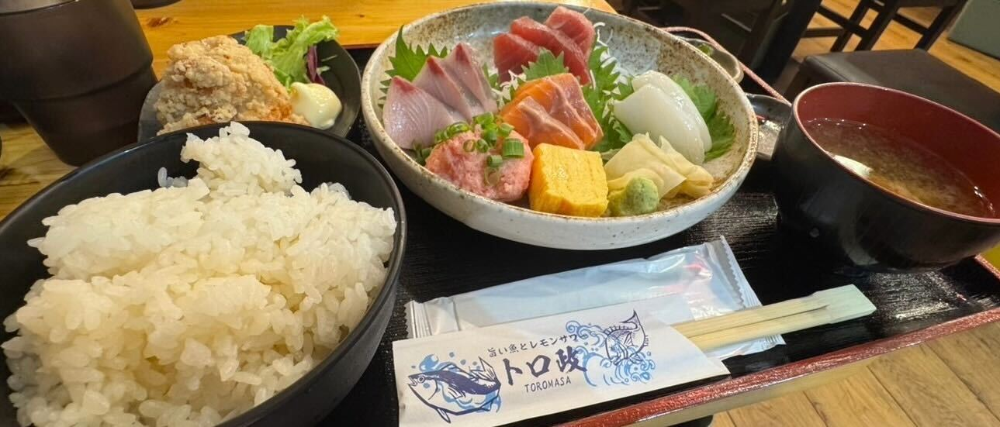

ボリューム満点！大満足の定食！「トロ政」
二日目のランチは「トロ政」でいただきました。
ルーレットで止まった駅に降りて、ぶらぶら歩きながらお店を探している中で出会ったお店です。
注文した定食は想像以上のボリュームがあってびっくり。
副菜から主菜までどれもおいしくて、偶然の出会いに感謝したくなるランチでした。

===店舗情報===
店名: トロ政 赤坂見附店
リンク: 公式ウェブサイト
住所: 東京都港区赤坂3-20-8 臨水ビル1F
浅草食べ歩きで至福のひととき！わらび餅に浅草メンチ
わらび餅
浅草で立ち寄ったお店で、わらび餅をいただきました。
やわらかくてとろっとした食感で、きなこの香りがふわっと広がります。
歩き疲れたところにちょうどよく、いいおやつタイムになりました。
浅草メンチ
浅草に来たら食べたくなる「浅草メンチ」も購入。
衣はサクッとしていて、中はジューシー。
シンプルだけどしっかり旨みがあって、小腹を満たすのにぴったりでした。
===店舗情報===
店名: 浅草メンチ
リンク: 公式ウェブサイト
住所: 東京都台東区浅草2丁目3-3